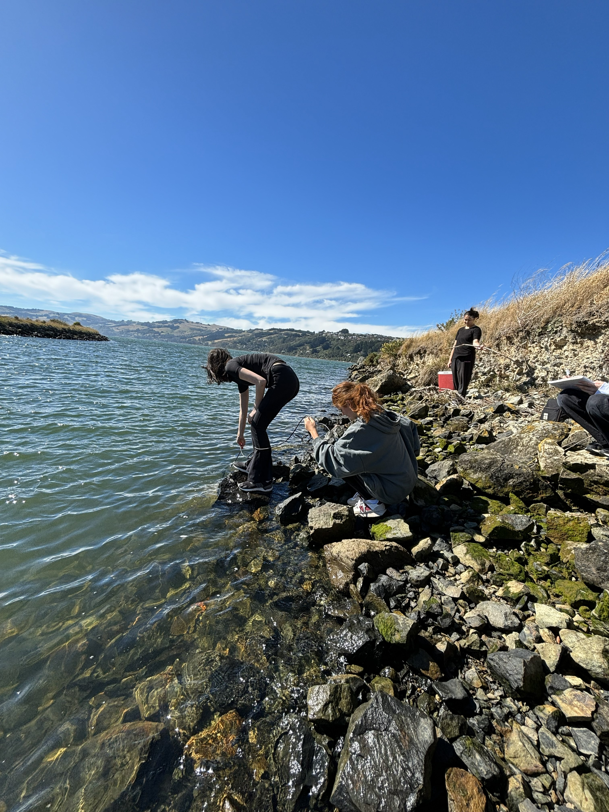
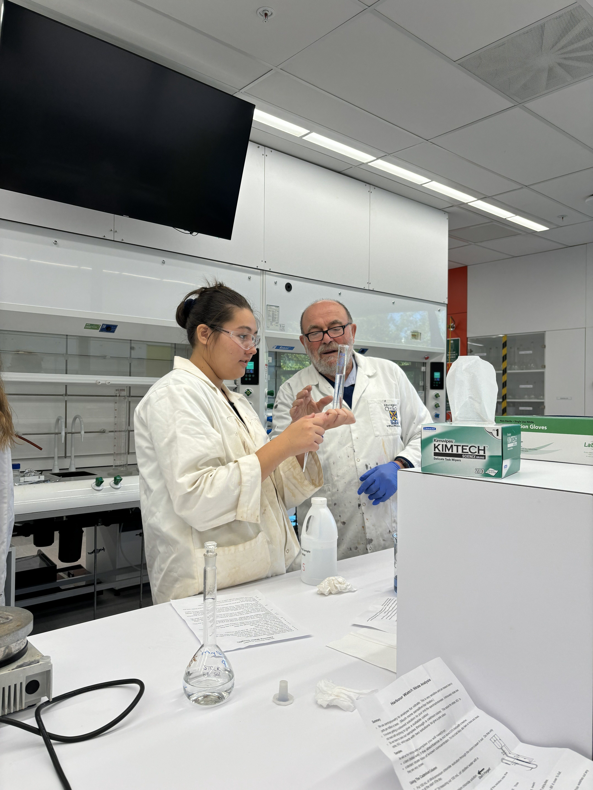
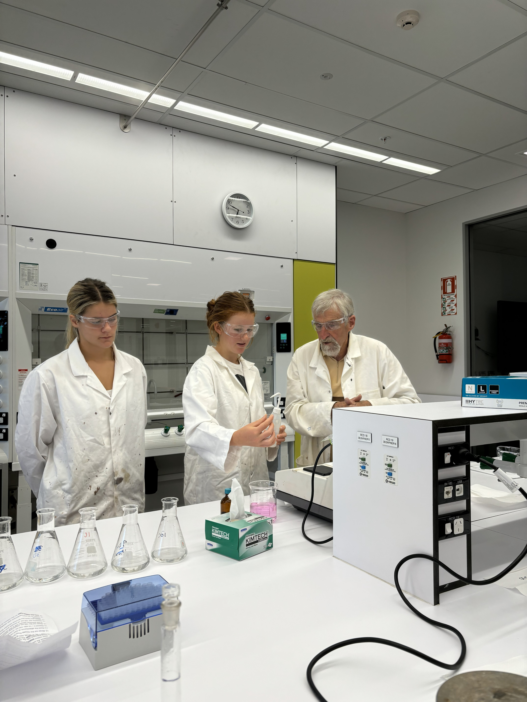
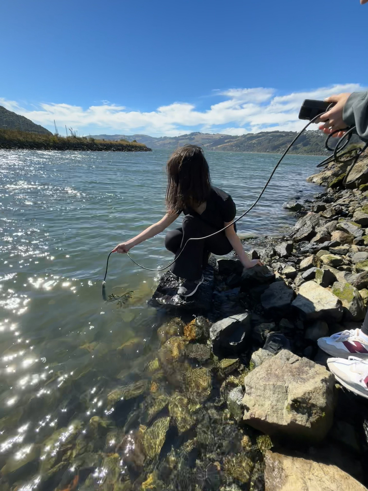
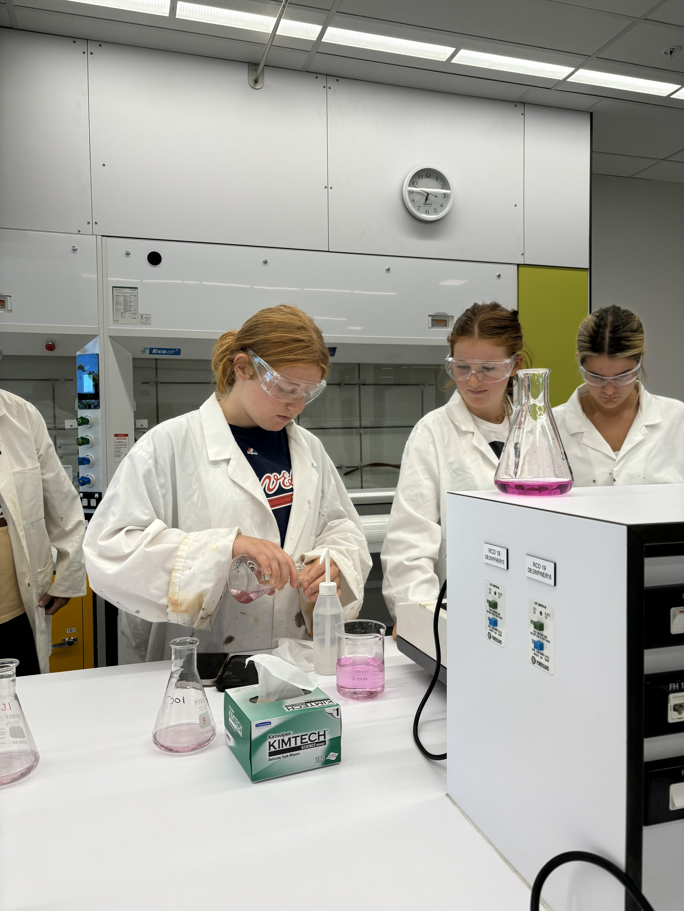
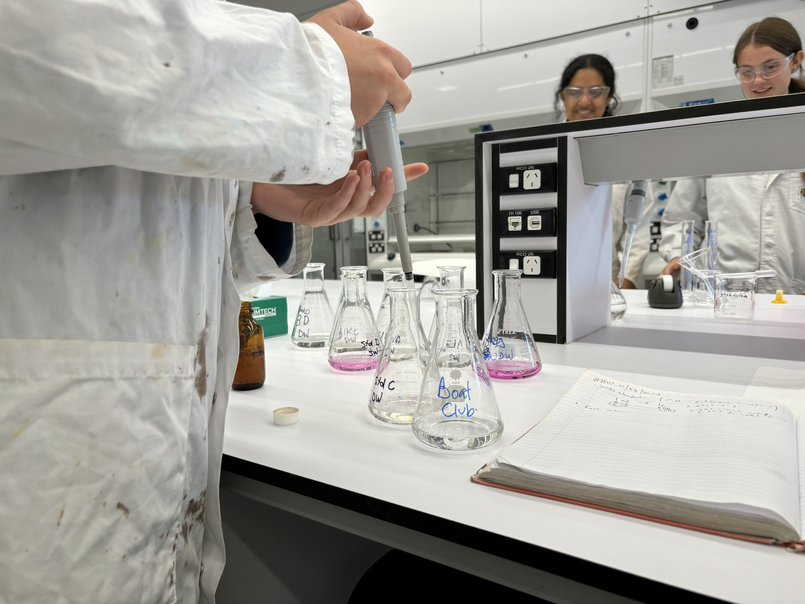
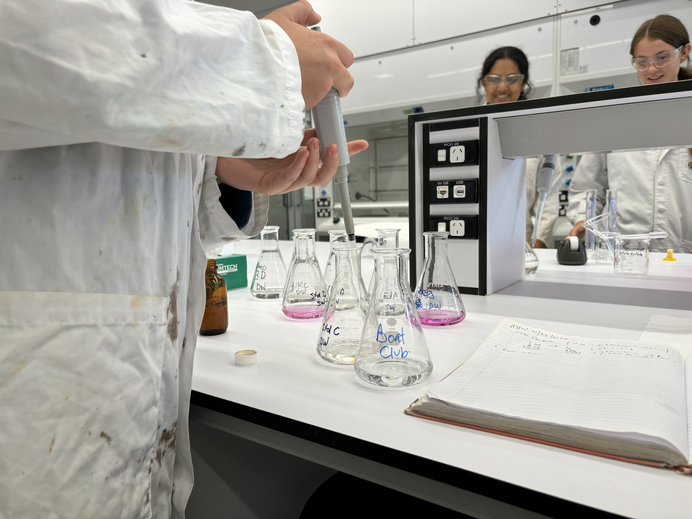
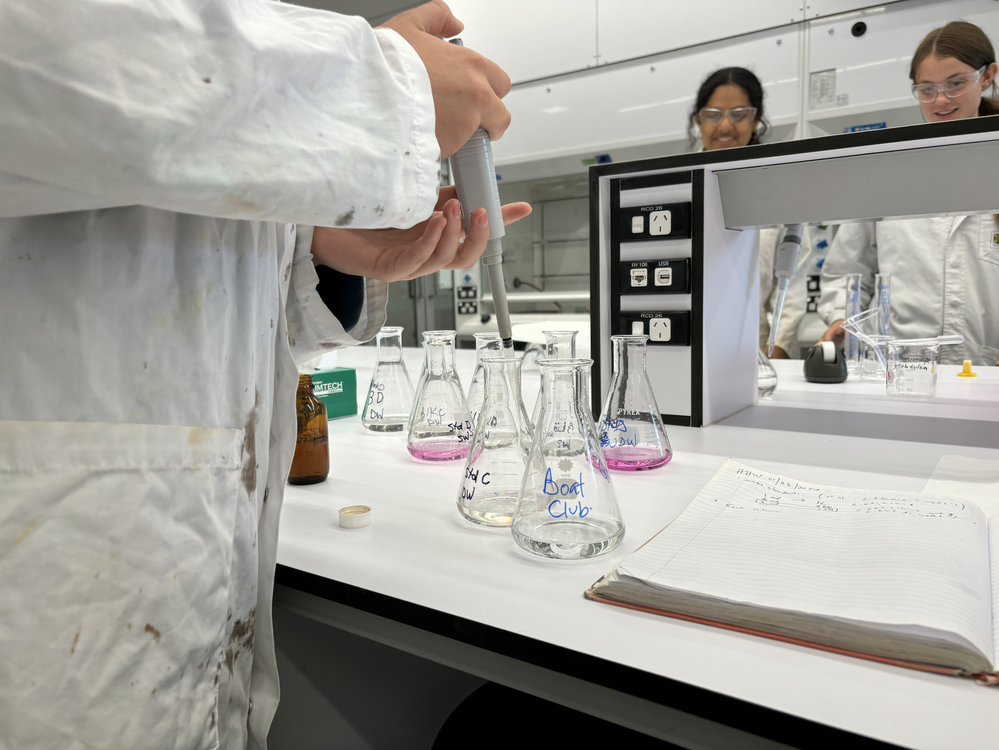

Join the Healthy Harbour Watchers
Healthy Harbour Watchers partners with schools across Dunedin to give students hands-on experience in environmental science. Students participate in real world data collection, learn to conduct water quality assays, and gain valuable lab skills. Our program brings science out of the classroom and into the harbour, empowering young people to explore, measure, and understand their local environment.
Through field trips and lab sessions, students collect samples, analyze results, and contribute to our long-term monitoring of Otago Harbour. It's a unique opportunity to work alongside scientists, develop practical skills, and make a real impact on the health of our waterways.





 

